Featured Story
The voice. The journey. The legacy.
Livingstone Etse Satekla built a career around Afro-dancehall, reggae, dancehall and Afropop while keeping Ghanaian identity at the centre of his sound.
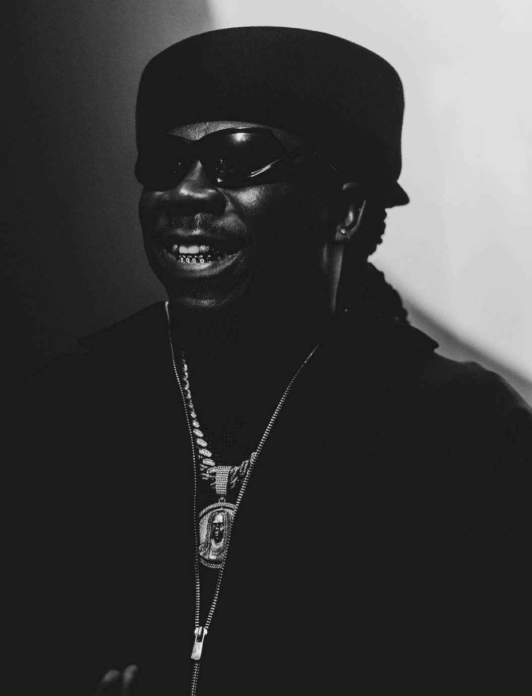
A fan-built archive celebrating Livingstone Etse Satekla — the music, the journey, the awards, the performances and the global movement behind Stonebwoy.
Explore the chapters that shaped Stonebwoy's career — from his roots and early music to major awards, international stages and the global BHIM movement.
Livingstone Etse Satekla built a career around Afro-dancehall, reggae, dancehall and Afropop while keeping Ghanaian identity at the centre of his sound.
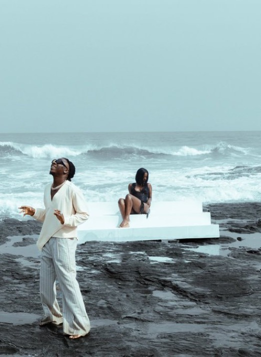
The early influences, school years and first professional steps that led to Grade 1.
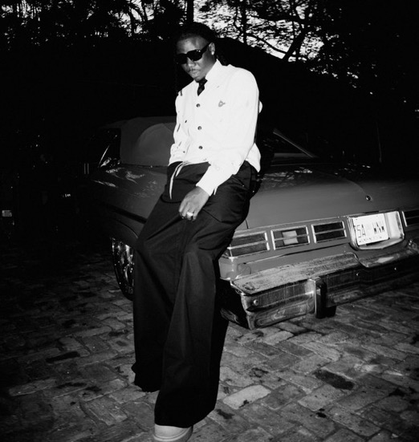
A difficult chapter that became part of the resilience behind the artist.
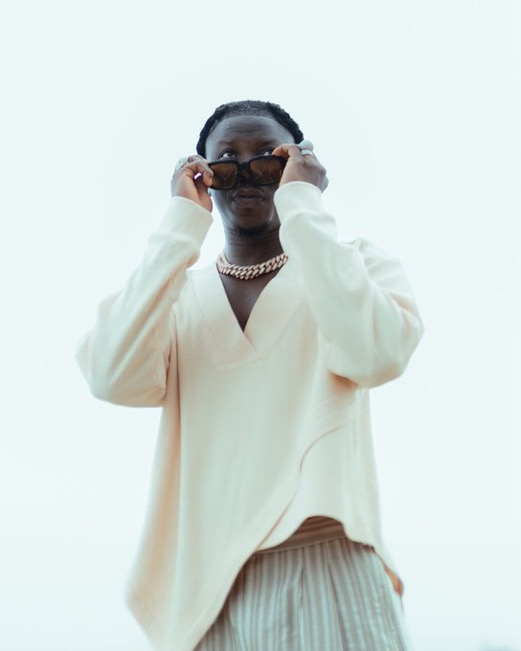
The international recognition that changed the scale of Stonebwoy's career.
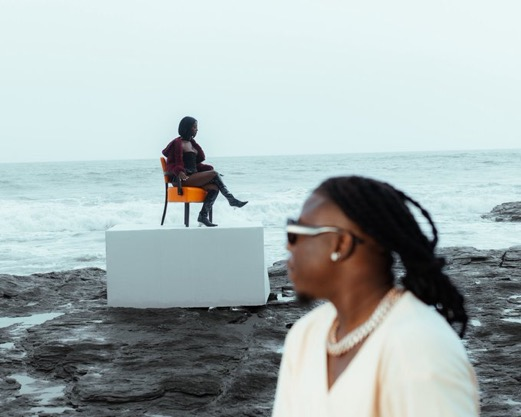
How recognition continued to grow after the first major international breakthrough.
From the 2015 Artiste of the Year win to another historic victory.

Billboard, BET and international recognition that pushed the music beyond Ghana.
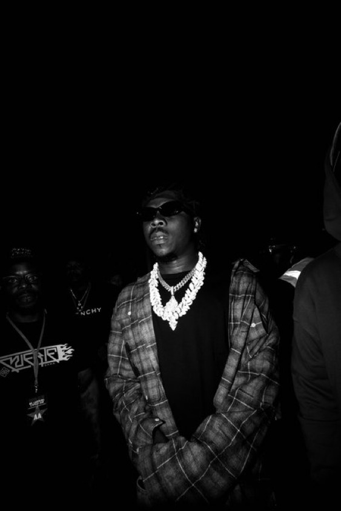
Why Stonebwoy's influence reaches beyond songs into culture and touring.
Identity, experience, representation and the connection with supporters.
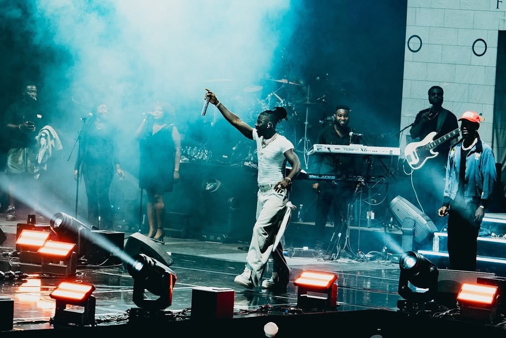
From Ghanaian stages to international tours and major BHIM Festival moments.
A selection of milestones that helped establish Stonebwoy as one of Ghana's most internationally recognised artists.
Stonebwoy won Best International Act: Africa at the 2015 BET Awards, marking one of the defining international moments of his career.

The album reached No. 13 on the Billboard World Albums chart, creating another important international milestone.
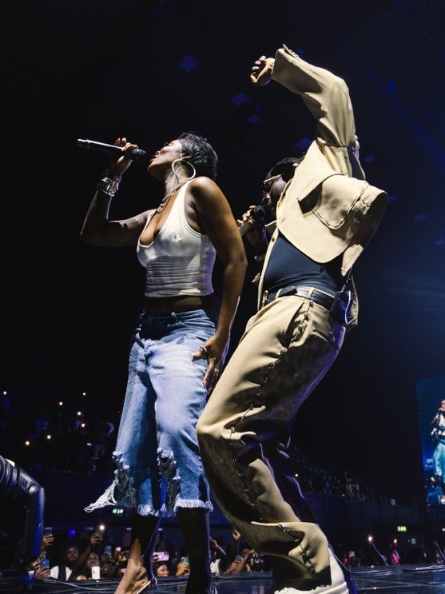
5th Dimension reached No. 8 on the Billboard Reggae Albums chart.
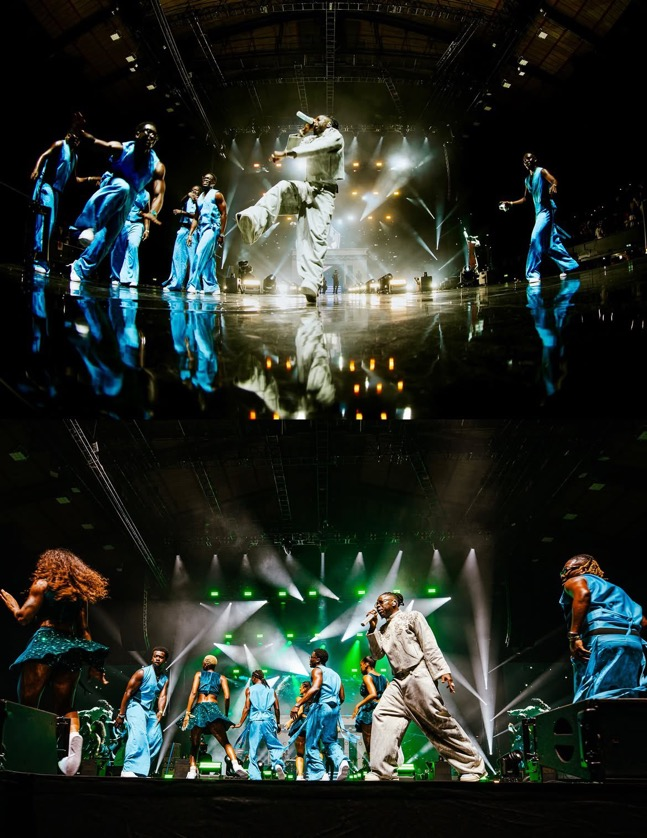
The festival expanded internationally, bringing the BHIM Festival experience to the United Kingdom.
New music, new chapters and major recent Stonebwoy moments.
On 15 August 2026, Stonebwoy brought BHIM Festival to OVO Arena Wembley in London — the first time a Ghanaian artiste headlined the iconic venue.
The latest album chapter in Stonebwoy's catalogue.
SEXY & BAD • Odo Nwom • Trouble (She Hate Men) • Biribiara Bεyε Fine • Blackstars (Ozamina) • Show Me • Wake Up
Explore the major album chapters that built the Stonebwoy catalogue.
Tap any video card to open the official YouTube destination.
A compact archive of major performances, touring eras and BHIM Festival moments.
Stonebwoy won Best International Act: Africa, marking a major international breakthrough.
The 5th Dimension era expanded Stonebwoy's international live presence.
Stonebwoy continued taking the Up & Runnin6 era to audiences outside Ghana.
A major chapter for the BHIM Festival brand, celebrating the festival's 10th anniversary.
Stonebwoy brought BHIM Festival to London and became the first Ghanaian artiste to headline OVO Arena Wembley.
New music, new performances and another chapter in Stonebwoy's continuing international journey.
A fan-compiled archive of international festival appearances associated with Stonebwoy. Individual entries may require further verification.
Official STONEBWOY merchandise available through the artist's official store. BHIM NATIVES UK does not sell these products.
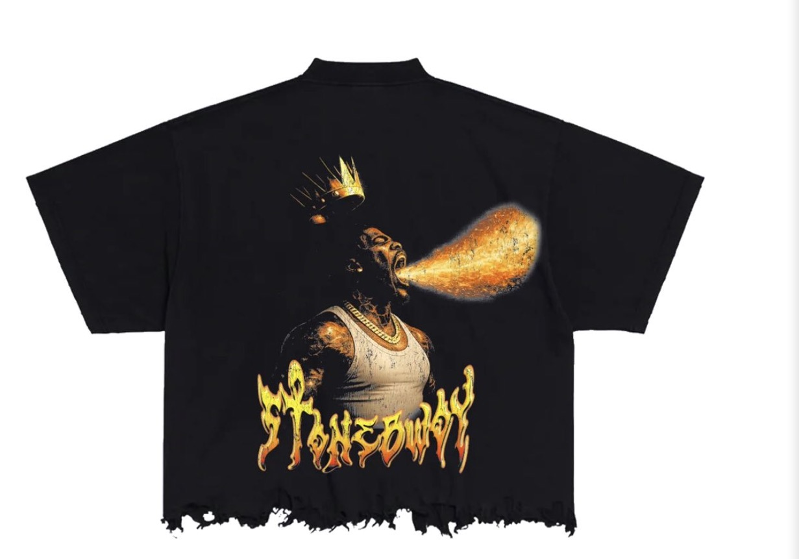
The Torcher graphic tee featuring Stonebwoy imagery.
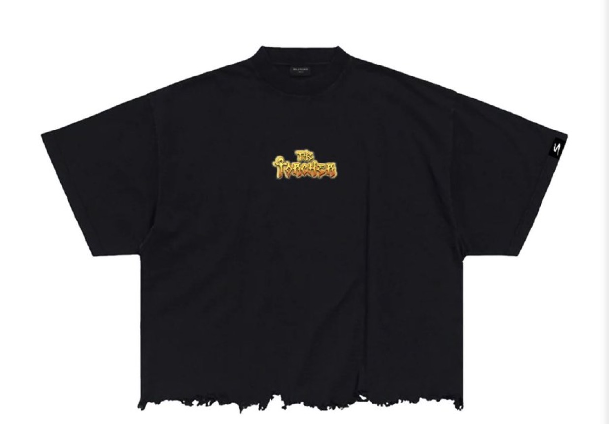
Longsleeve design from the official Stonebwoy collection.
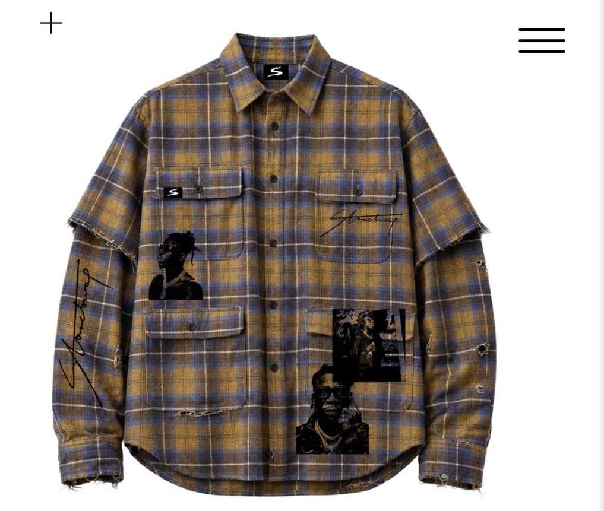
Black oversized Stonebwoy Torcher design.
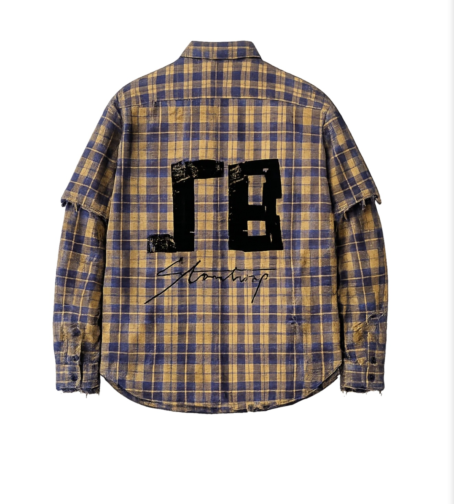
Stonebwoy graphic flannel overshirt.
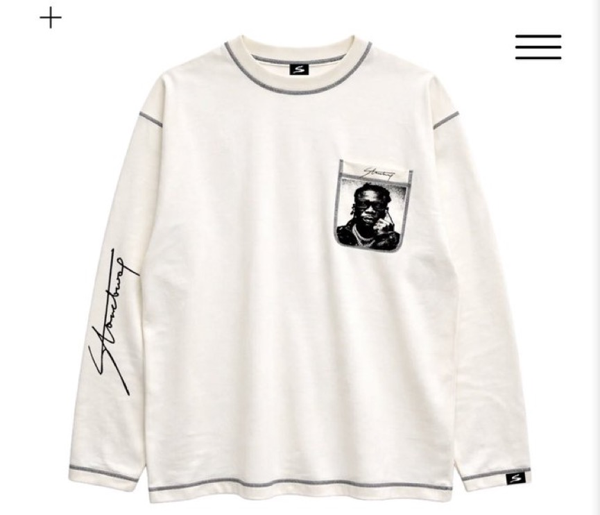
A fan archive visual from the Stonebwoy streetwear collection.
Stonebwoy signature and graphic detailing.
A compact visual archive. Tap any photograph to view it larger.
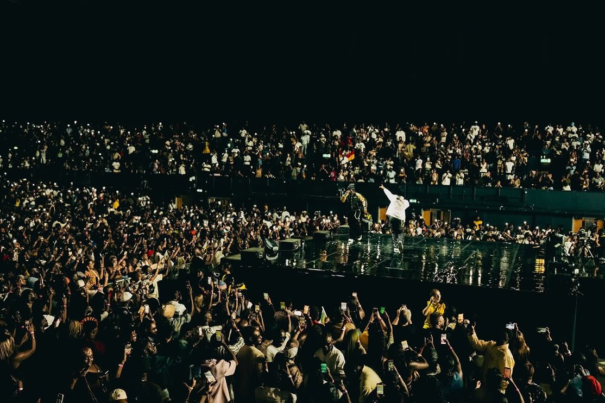
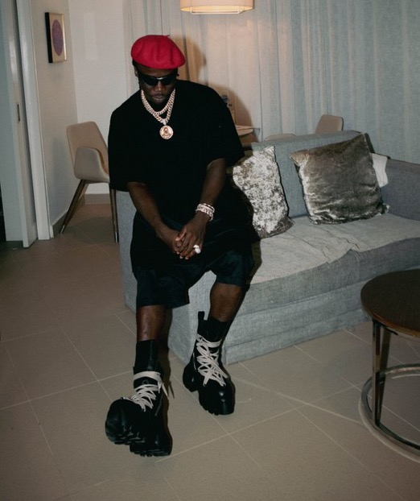
Follow BHIM Natives UK across social media for Stonebwoy updates, statistics, music and news.
Find Stonebwoy's official pages and music.